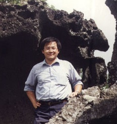
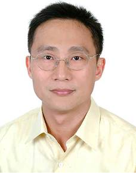
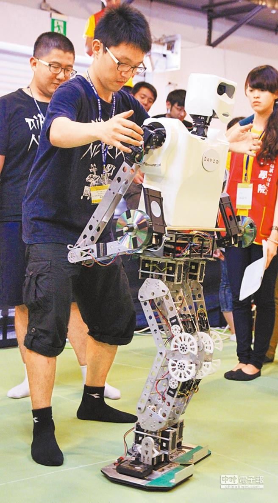

系 所 簡 介
本系系館原位於成功校區工學院大道旁，為創校時代平房建築。民國廿二年九月改建為二層樓建築。鑑於本系發展迅速，師生人數不斷增長，原有系館建築面積過小不敷使用，遂於自強校區興建新式系館。民國八十七年新系館落成啟用，為地上十二層地下二層之新式大樓，樓板面積約26769平方公尺，成為國內最大電機系館，提供學生寬敞研究、學習環境。本系研究各組分別進駐各樓層，儀器、研究資訊交流甚為方便，為系上研究注入一股新活力。另外，由於近年來本系不斷擴充規模，透過本系傑出系友協助，由 奇美電子捐贈本系第二系館，樓板面積約4500坪，於95年完工啟用，為本系之發展開啟新的里程碑。
演 講 訊 息
傑 出 表 現
-
加拿大「未來網路與通訊」論壇會議最佳論文獎
恭賀黃振發老師榮獲加拿大舉辦之「未來網路與通訊」論壇會議最佳論文獎
 - 
103年中國電機工程學會高雄分會「傑出電機工程教授獎」
恭賀 本系 林志隆老師榮獲103年中國電機工程學會高雄分會「傑出電機工程教授獎」
-
成大全能機器人 135cm舉4kg - 中時電子報
李祖聖老師得獎的資訊:http://www.chinatimes.com/newspapers/20140518000372-260107
 -
「IEEE Gustav Robert Kirchhoff Award」
恭賀 本系傑出校友 劉炯朗院士榮獲2014年「IEEE Gustav Robert Kirchhoff Award」